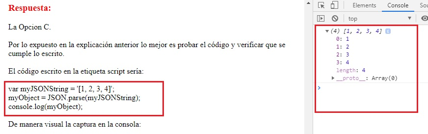

|
You have the following code:
Section: Volume D Explanation Explanation/Reference: Explanation: https://www.w3schools.com/js/js_json_parse.asp ExplicaciónLa mejor manera de hacer este tipo de conversion, como sugiere Douglas Crockford (uno de los gurús más grandes de JavaScript), es usando el analizador nativo JSON, ya que no solo es más rápido que eval (), también es más seguro.El analizador JSON nativo ya está disponible en:
Respuesta:La Opcion C.Por lo expuesto en la explicación anterior lo mejor es probar el código y verificar que se cumple lo escrito. El código escrito en la etiqueta script sería: var myJSONString = '[1, 2, 3, 4]'; myObject = JSON.parse(myJSONString); console.log(myObject); De manera visual la captura en la consola:

Fuentes:https://stackoverflow.com/questions/3473639/best-way-to-convert-string-to-array-of-object-in-javascript |